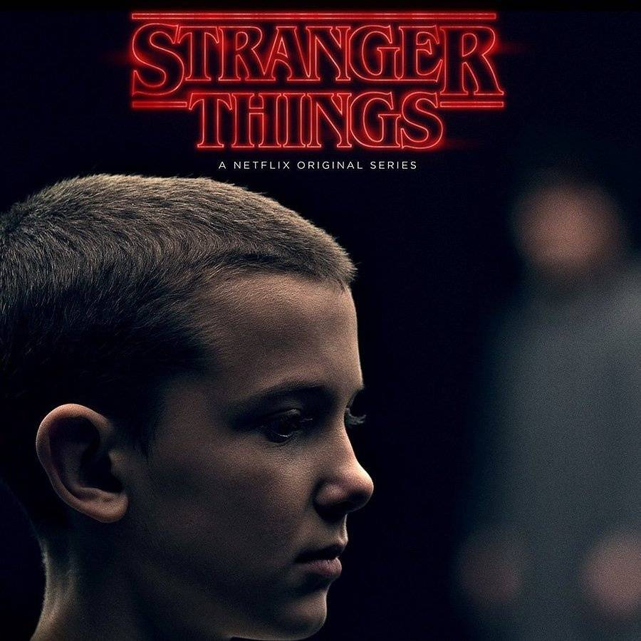
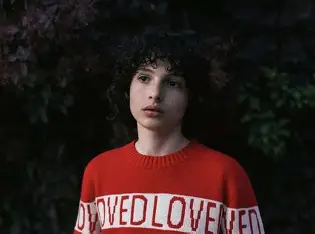
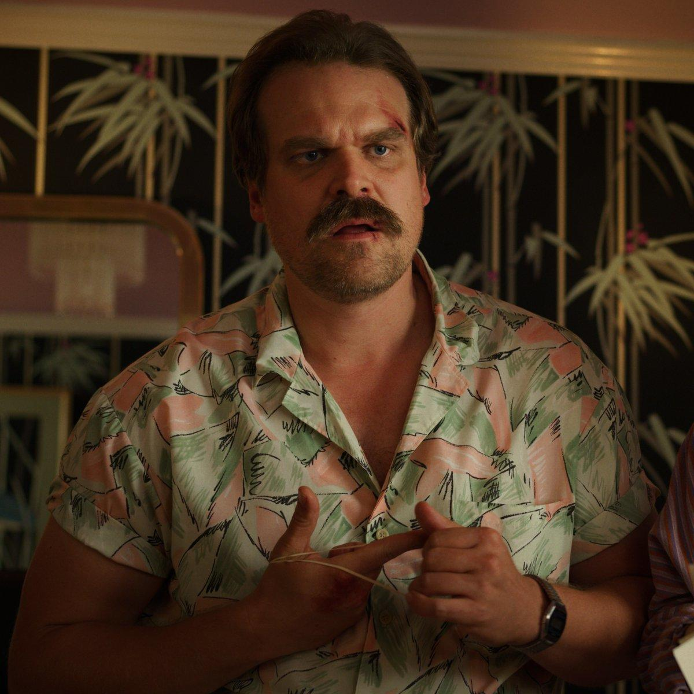
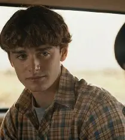

由米莉·波比·布朗饰演，本名简·艾弗斯，是霍金斯实验室的实验对象，拥有心灵感应、隔空移物等强大超能力，童年在实验室中被严格控制，缺乏正常的社会认知。
她逃离实验室后遇到了迈克等人，成为他们的朋友，逐渐学会了表达情感和融入社会。她是对抗颠倒世界怪物的核心力量，与迈克有着深厚的感情，后期被霍珀警长收养，拥有了温暖的家庭。

由菲恩·伍法德饰演，是主角小队的核心人物，性格善良、勇敢，重视友情。他是第一个发现并收留十一的人，对十一产生了深深的爱慕之情。
在威尔失踪后，他带领朋友一起寻找真相，面对超自然危险时从不退缩，始终坚定地站在十一身边，是小队中的“领导者”之一，热爱D&D（龙与地下城）桌游。

由大卫·哈伯饰演，霍金斯小镇的警长，性格粗犷但内心柔软，曾因女儿的离世而陷入颓废，后期逐渐找回责任感。
他是调查威尔失踪案的核心人物，逐渐发现了霍金斯实验室的秘密，后期收养了十一，成为她的养父，为了保护十一和小镇居民，多次以身犯险，是剧中的“硬汉柔情”代表。

由诺亚·施纳普饰演，迈克的好友，性格内向、敏感，热爱绘画，是第一季中第一个被吸入颠倒世界的人。
他在颠倒世界中艰难求生，被救出后仍与颠倒世界有着特殊的“连接”，能够感知到怪物的存在和动向，成为对抗超自然力量的重要“预警者”，后期逐渐摆脱阴影，找回自我。